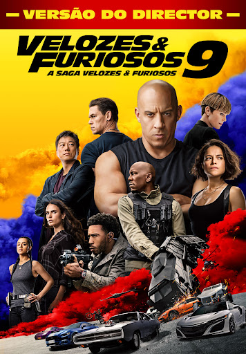
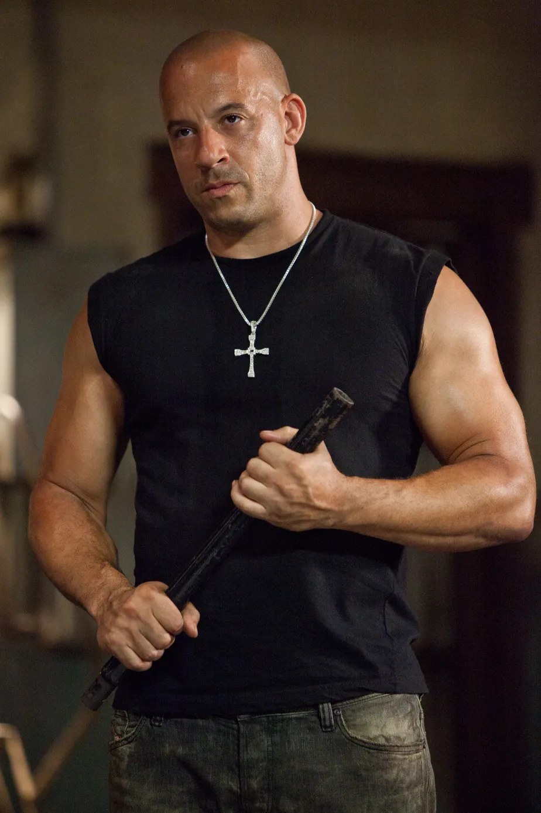
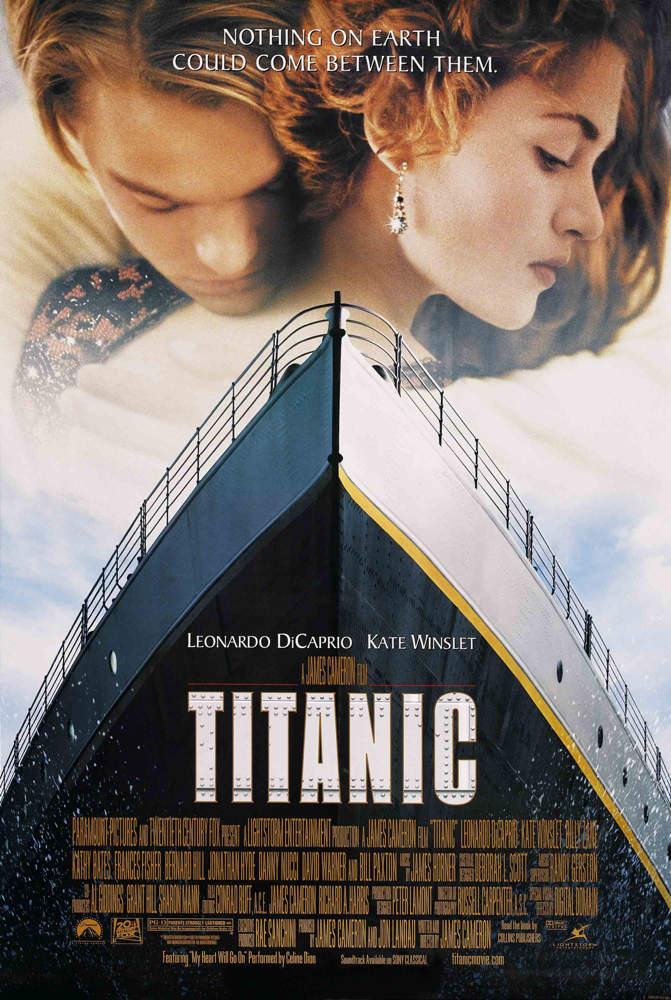
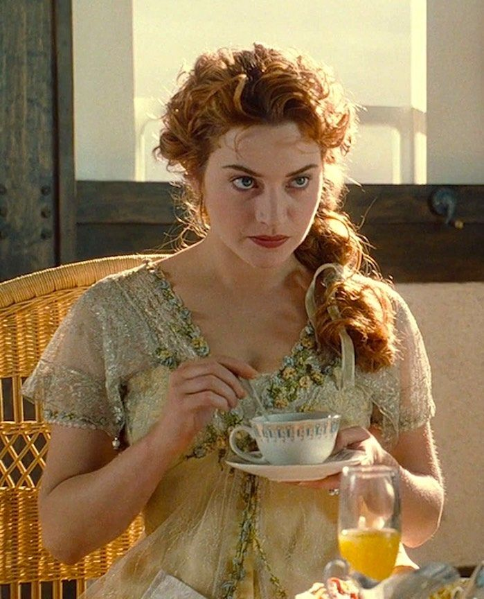
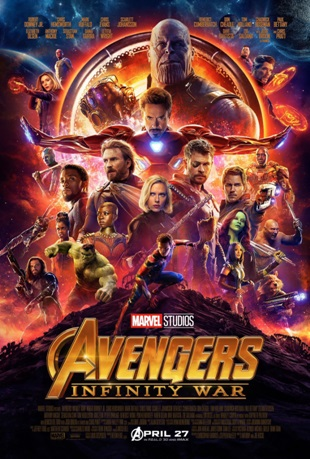
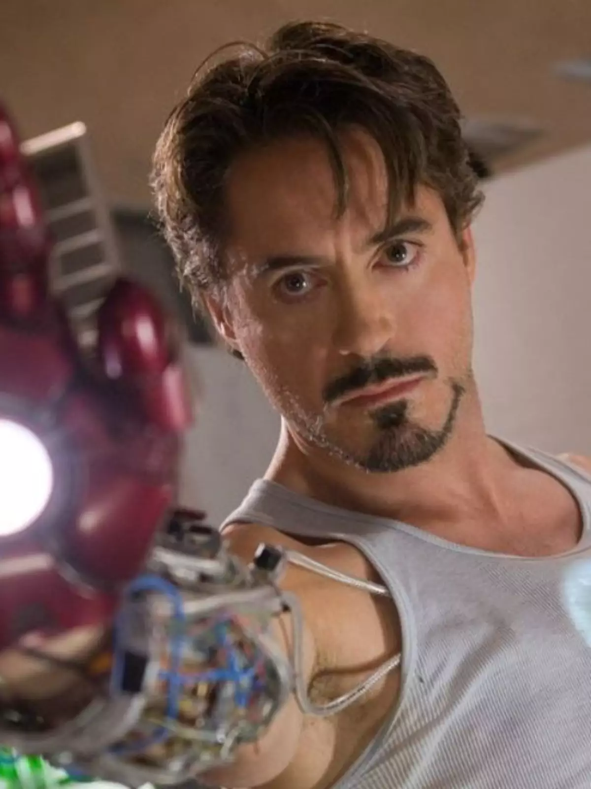
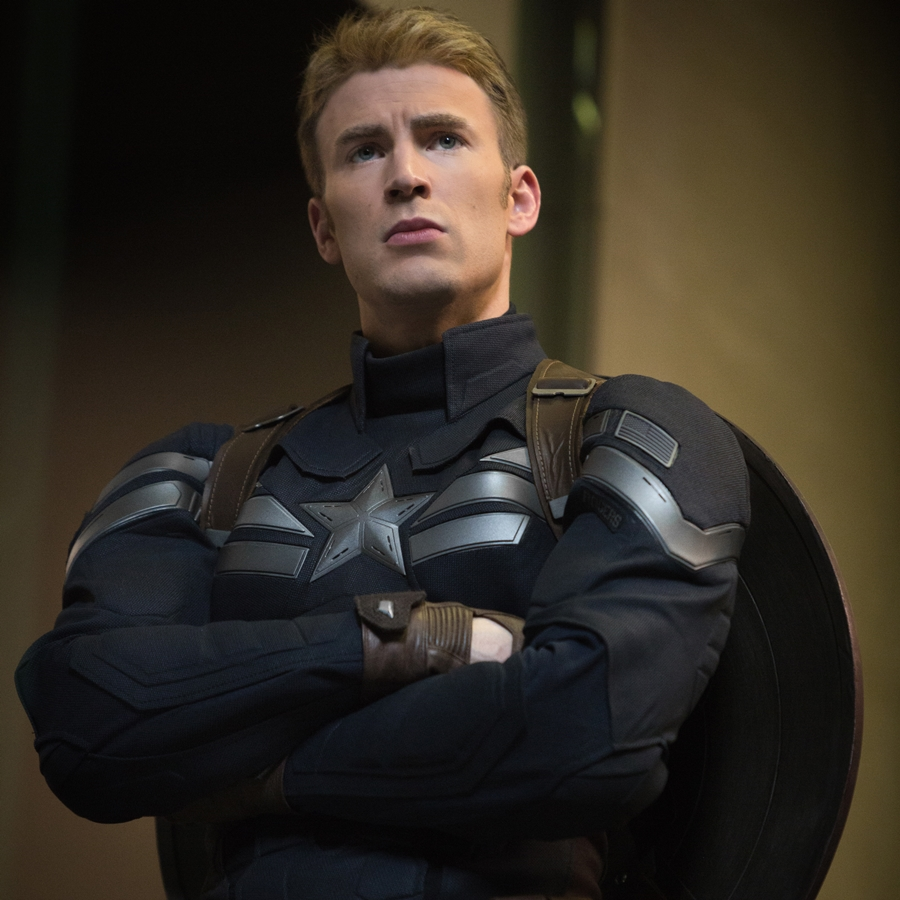
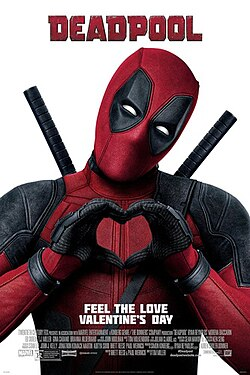
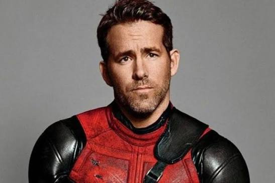
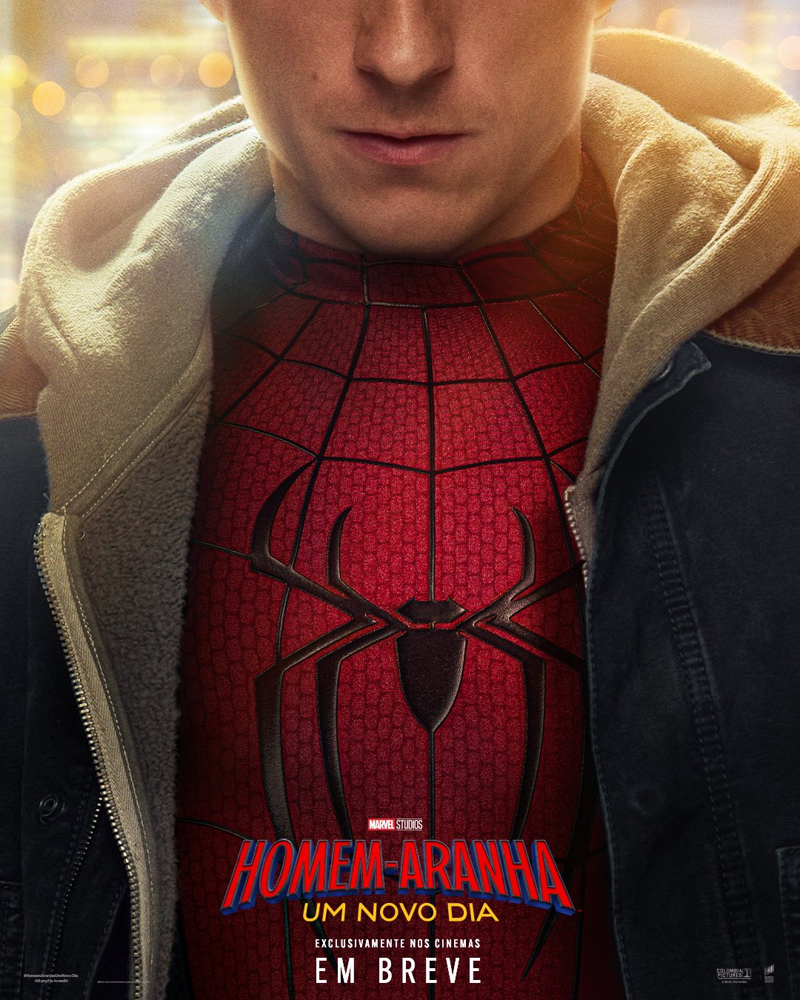

FILME EM DESTAQUE
Velozes e Furiosos 9
Velocidade, adrenalina, amizade e muita ação.

Sinopse
Brian O'Conner é um policial infiltrado que se aproxima de Dominic Toretto e sua equipe de corredores de rua. Entre corridas, perseguições e desafios, Brian começa a questionar sua missão e cria fortes laços de amizade.
Informações
Gênero
Ação, crime e aventura
Ano
2001
Duração
1 hora e 46 minutos
Avaliação
★ 6,8 / 10
Elenco principal
Paul Walker
Brian O'Conner

Vin Diesel
Dominic Toretto
FILME EM DESTAQUE
Titanic
Uma história de amor que atravessa o tempo.

Sinopse
Rose embarca no Titanic ao lado de sua família e conhece Jack, um jovem passageiro de origem humilde. Os dois desenvolvem uma história de amor enquanto o navio segue sua viagem através do oceano.
Informações
Gênero
Romance, drama e aventura
Ano
1997
Duração
3 horas e 14 minutos
Avaliação
★ 7,9 / 10
Elenco principal

Leonardo DiCaprio
Jack Dawson

Kate Winslet
Rose DeWitt Bukater
FILME EM DESTAQUE
Vingadores
Heróis unidos para salvar o mundo.

Sinopse
Quando uma ameaça coloca o planeta em perigo, grandes heróis são reunidos para enfrentar um inimigo poderoso. Homem de Ferro, Capitão América, Thor, Hulk, Viúva Negra e Gavião Arqueiro precisam trabalhar juntos para proteger a humanidade.
Informações
Gênero
Ação, aventura e ficção científica
Ano
2012
Duração
2 horas e 23 minutos
Avaliação
★ 8,0 / 10
Elenco principal

Robert Downey Jr.
Homem de Ferro

Chris Evans
Capitão América
FILME EM DESTAQUE
Deadpool
Humor, ação e um herói completamente fora do padrão.

Sinopse
Wade Wilson passa por um experimento que transforma sua vida completamente. Com habilidades especiais e um senso de humor peculiar, ele assume a identidade de Deadpool e parte em busca de vingança.
Informações
Gênero
Ação, comédia e aventura
Ano
2016
Duração
1 hora e 48 minutos
Avaliação
★ 8,0 / 10
Elenco principal

Ryan Reynolds
Wade Wilson / Deadpool
Morena Baccarin
Vanessa
FILME EM DESTAQUE
Homem-Aranha
Grandes poderes trazem grandes responsabilidades.

Sinopse
Peter Parker é um jovem que ganha habilidades especiais após ser picado por uma aranha. Enquanto aprende a controlar seus novos poderes, ele descobre que precisa usá-los para proteger as pessoas ao seu redor.
Informações
Gênero
Ação, aventura e ficção científica
Ano
2002
Duração
2 horas e 1 minuto
Avaliação
★ 7,4 / 10
Elenco principal
Tobey Maguire
Peter Parker / Homem-Aranha
Kirsten Dunst
Mary Jane Watson